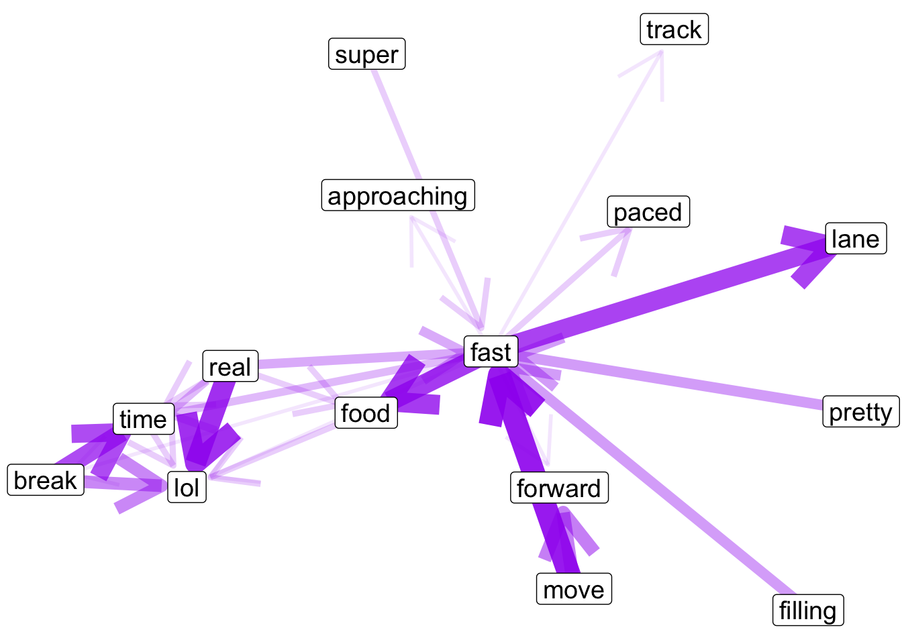

Coursera Capstone: Text Analysis
5/14/2017
## Globals ---------------------------------------------------------------------
library(stringr)
library(tidytext)
library(igraph)
library(ggraph)
library(gridExtra)
library(tidyverse)
library(magrittr)
options(encoding = "UTF-8")
set.seed(1)Foreword
This analysis leans heavily on the fantastic packages: library(tidytext) and library(tidyverse). I am also a huge fan of the compound assignment %<>% from library(magrittr).
Our goal in this script is to get a handle on a courpus of text we’ve been provided. There are three files in the corpus, each a large text file that has been sourced exclusively from different types of media (blogs, news, and Twitter). The documents are raw with unknown encoding, so our first step is to efficeintly read in and clean up each document into a form we can analyze.
Read Ins
# readLines() for chr_vectors and speed
getwd()
news <- readLines("~/en_US.news.txt")
twitter <- readLines("~/en_US.twitter.txt") # there are some non-essential warnings() here
blogs <- readLines("~/en_US.blogs.txt")
# store them in a named list
sources <- list(news = news, twitter = twitter, blogs = blogs)
# count lines in each
map(sources, length)
# sample down to 10%
set.seed(1)
small_sources <- map(sources, ~ sample(., length(.) * .10))Since each file is over 1 million lines, it makes sense that we’d sample to cut down on our processing time. Reducing down to 10% of the lines present in each of the 3 sources, shouldn’t negatively impact of prediction potential.
Tidy Up
The core concept of library(tidytext) is to organize a courpus as a tidy data frame, meaning one observation per row. We will do this now.
# convert to a tibble structure from character; also let's index entries
tidy_sources <- map(small_sources, ~ tibble(text = ., entry = 1:length(.)))I’ve used a tibble here instead of a traditional data.frame, because a tibble can do more things and I consider it a better more modern improvement on the data.frame as R’s central tabular storage object. If you don’t use tibble’s already its worth have a read here, if you have ever wanted to store a list in a data.frame’s column.
Unnest
Now we have our data in a tidy format, we really need to unpack the lines so we can analyze word counts. To do this, tidytext::unnest_tokens() comes in very handy.
At the same time I am going to handle the unknown encoding of the corpus, with a regular expression designed to only allow lower case letters A-Z and apostrophes. By default unnest_tokens() converts everything to lower case.
Side Note Unknown encoding of apostrophe’s, caused me serval stressful nights, loosing my mind doing failed equality comparrisons with characters that appeared the same on my screen.
# unnest_tokens as single words
word_sources <- map(tidy_sources, ~ unnest_tokens(., word, text))
# method to catch "foriegn" characters
word_sources %<>% map(~ mutate(., word = str_extract(word, "[a-z]+'?[a-z]+")))
# percent "foriegn" words, NAs now
map(word_sources, ~ sum(is.na(.$word)) / nrow(.))## $news
## [1] 0.05982832
##
## $twitter
## [1] 0.06846871
##
## $blogs
## [1] 0.05923256# drop NAs
word_sources %<>% map(~ filter(., !is.na(word)))That is a crude method to determine if a word is from a “foriegn” language, but it is good in the sense it is extremely restictive. That makes doing proper filtering possible in later stage. In a scenario like this where we have an abundance of data, filtering out a corrupted ~ 5% is accetable.
Stop Words
I also also want to drop “stop” words. These are hyper-common words with little to no impact in terms of text analysis. Words like “the”, “of”, and “a” all fall into this category and while these words make up the bulk of our corpus, they hold minimal predictive or sentimental value. I will show the top 20 words before and after removing “stop” words:
# Before
# plot the top 20 raw
plot_df <- word_sources %>%
map_df(~ count(., word, sort = T) %>%
top_n(20), .id = "source") %>%
mutate(word = reorder(word, n))## Selecting by n
## Selecting by n
## Selecting by nggplot(plot_df, aes(x = word, y = n, fill = source)) +
geom_col(show.legend = F) +
coord_flip() +
facet_wrap(~ source, scales = "free")# top 1000 make up 70 %
word_sources %>%
map_df(~ count(., word, sort = T) %>%
mutate(rel_freq = n / sum(n)), .id = "source") %>%
group_by(source) %>%
top_n(1000) %>%
summarise(percent_total = sum(rel_freq))## Selecting by rel_freq## # A tibble: 3 x 2
## source percent_total
## <chr> <dbl>
## 1 blogs 0.7213822
## 2 news 0.6703697
## 3 twitter 0.7461815# 3 lexicons built in
data(stop_words)
# clean stop_words just like sourcew above
stop_words %<>% mutate(word = str_extract(word, "[a-z]+'?[a-z]+")) %>%
filter(!is.na(word))
# add custom "stop" words
stop_words %<>% full_join(tibble(word = c("i", "m", "ve", "t", "don", "can", "st"), lexicon = "cust"))## Joining, by = c("word", "lexicon")word_sources %<>% map(~ anti_join(., stop_words))## Joining, by = "word"## Joining, by = "word"
## Joining, by = "word"# After
# now re-plot the top 20
plot_df2 <- word_sources %>%
map_df(~ count(., word, sort = T) %>%
top_n(20), .id = "source") %>%
mutate(word = reorder(word, n))## Selecting by n## Selecting by n
## Selecting by nggplot(plot_df2, aes(x = word, y = n, fill = source)) +
geom_col(show.legend = F) +
coord_flip() +
facet_wrap(~ source, scales = "free")# now top 1000 make up 40-50 %
word_sources %>%
map_df(~ count(., word, sort = T) %>%
mutate(rel_freq = n / sum(n)), .id = "source") %>%
group_by(source) %>%
top_n(1000) %>%
summarise(percent_total = sum(rel_freq))## Selecting by rel_freq## # A tibble: 3 x 2
## source percent_total
## <chr> <dbl>
## 1 blogs 0.4105591
## 2 news 0.4049446
## 3 twitter 0.5065281stop_words %<>% full_join(tibble(word = c("rt", "im", "follow"), lexicon = "cust"))## Joining, by = c("word", "lexicon")Notice, there are some specific Twitter words, like “rt”, “follow”, and “im”, in the top20 and I’ve added these to the stop_words. I think these words are more about the structure of the community and less about actual communicative text.
Model with Bi-grams
Now our data is clean, I am going to focus on the Twitter document to build a relationship network with associated probabilities. The goal of this network is the map all of the words immediatly following a word of interest (WOI). In network terminology this is neighborhood of the first order, since we are only interested in direct connections from our WOI. To accomplish these network task, I am using library(igraph).
First we need to reprocess the Twitter document as bi-grams, not the words we did above. The steps here are similar to those above, but it takes a little longer to unnest, becasue bigrams are by defauly overlapping. Meaning the chacter vector “I really love Coursera”, would be split into c(“I really”, “really love”, “love Coursera”), expanding the size of the object being generated and increasing processing time.
# unnest to bigrams
g2_twitter <- tidy_sources[["twitter"]] %>%
unnest_tokens(gram, text, token = "ngrams", n = 2)
# same steps as above, just adapted to cover two columns here
g2_twitter %<>% separate(gram, c("w1", "w2"), sep = " ") %>%
mutate_at(vars(starts_with("w")), funs(str_extract(., "[a-z]+'?[a-z]+"))) %>%
filter(!is.na(w1),
!is.na(w2),
!w1 %in% stop_words$word,
!w2 %in% stop_words$word)
# leave separated for pairwise work
# count up pair frequencies
g2_counts <- g2_twitter %>%
group_by(w1) %>%
count(w2, sort = T) %>%
filter(n > 2)
# we could plot similar bar charts like aboveNeighborhood
Now we have a dataframe of with counts of bigrams that appear more than 2 times. We can easily turn this into a graph object and plot it to look at patters. For this example I am looking at the first order neighborhood around “fast”:
# make a large network
tnet <- graph_from_data_frame(g2_counts[,1:2])
# weight the edges with count data
E(tnet)$weight <- g2_counts$n
# this is just a short hand reference variable
v <- grep("fast", V(tnet)$name)[1]
# make 1-edge "neighborhood" network of around v
small_net <- make_ego_graph(tnet, order = 1, nodes = v)[[1]]
# plot it
ggraph(small_net, layout = "nicely") +
geom_edge_link(aes(width = log(weight),
alpha = log(weight)),
arrow = arrow(length = unit(10, 'mm')),
end_cap = circle(5, 'mm'),
edge_colour = "purple",
show.legend = F) +
geom_node_label(aes(label = name),
size = 5) +
scale_edge_alpha(range = c(.1, .9)) +
theme_void()
We can see a lot of relationship that make sense, like “fast food”, “fast lane” and “move fast”. The edge thickness and transparency are scaled to show the probability of the association and the arrows show direction from first word to second word. It’s always nice to look at the data to make sure things behaving like expected. Note, so of the nodes are connected directly without going through “fast” and this is because we started with a much larger network and are only plotting the “neighborhood” one node away from our target.
Make it fast
Inorder to build something that is quick for look ups we need to perform and store most of these calculations ahead of time. One simple method of doing this would be to build an ordered top 10 (or top ‘n’) list of second words for each first word in our data set (and store it in a big list). Since lots of first words will not have a full 10 associated second words we are going to back-fill the remaining slots with the top 10 words in frequency from the dataset overall. In a real world setting, taking advantage of the ability to record, analyse and update our bigram probabilities based on user history would make this tool much better, but for now this is a quick proof of concept and display of speed.
# if we want to do this fast lets make a list of top10's or topn's
my_n <- 10
# grab the topn for each first word
topn_list <- g2_counts %>%
split(.$w1) %>%
map(~ top_n(., my_n)) # these are the trade-offs we make
# looks good, but some groups don't have 10 preditions
# fill these gaps with the top 10 overall words
topn_overall <- count(word_sources[["twitter"]], word, sort = T) %>%
top_n(my_n) %>%
select(word) %>%
unlist()
# long term we could do this within the specific og document (i.e. chapter, post, etc...)
# anon() for map(.f)
anon <- function(df) {
if (nrow(df) < my_n) {
df %<>% bind_rows(tibble(w1 = unique(df$w1),
w2 = topn_overall[1:(my_n - nrow(df))],
n = 1) ) }
return(df) }
# run anon on the list
topn_list %<>% map(anon)
# lets ungroup and lean it out
topn_lean <- map(topn_list, ~ ungroup(.) %>%
select(pred = w2, n) %>%
mutate(p = n / sum(n)))
topn_lean[["fast"]] # with probabilities## # A tibble: 10 x 3
## pred n p
## <chr> <dbl> <dbl>
## 1 food 20 0.28169014
## 2 forward 18 0.25352113
## 3 approaching 9 0.12676056
## 4 paced 7 0.09859155
## 5 lane 4 0.05633803
## 6 break 3 0.04225352
## 7 lol 3 0.04225352
## 8 time 3 0.04225352
## 9 track 3 0.04225352
## 10 love 1 0.01408451system.time( topn_lean[["fast"]] ) # wow that's fast## user system elapsed
## 0 0 0Conclusion
Thank you for reading and I look forward to any constructive feedback about my strategy, code or presentations. Please feel free to contact me directly.